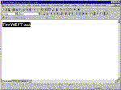
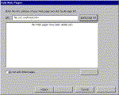
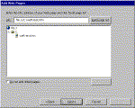
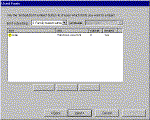
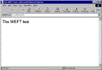

|
| ||
|
| ||
Shamir Dasgupta
Brought to you by Inside Microsoft FrontPage, a ZD Journals
publication.
Click here for a free issue  .
.
As a designer, you've probably been frustrated at times by the Web's limitation in handling fonts. On the Web, the browser and the user's machine have almost total control over what fonts appear on your pages. While you can specify a font you'd like to use, the browser will only display that font if it's actually installed on the user's machine.
One alternative to this problem is to turn your text into GIF images, but that leads to slow download times. Another alternative, which we'll explore in this article, is to embed copies of the fonts you want to use within your Web site. When you do so, Microsoft Internet Explorer 4.0 (and later versions) will use those embedded font copies to accurately display your text. Other browsers will simply ignore the embedded-font instructions and continue to use a default font.
Microsoft's TrueType font embedding technology is based on Cascading Style Sheets (CSS), the set of Web standards that give you greater control over the appearance of your pages.
In addition to requiring a CSS-compliant browser, the technology requires you to use fonts that have embedding permission encoded into them. The core Windows fonts will work, as will some newer fonts from other companies.
Finally, you'll need a copy of Microsoft WEFT, the Web
Embedding Font Tool. You can download this free utility
from
www.microsoft.com/typography/Web/embedding/weft/  .
.
As we'll see shortly, WEFT analyzes the fonts you've used in your Web site and then creates font objects. A font object is a compressed file containing just the font characters you've used in your HTML document. (You can think of it as a subset of a traditional font file.) WEFT also adds a CSS font definition to your Web pages to refer to the font object.
For example, if you embedded the Matisse ITC font, WEFT would add the following code to the <head> section of your HTML file:
<style TYPE="text/css">
<!--
@font-face {
font-family: Matisse ITC;
font-style: normal;
font-weight: normal;
src: url(MATISSE0.eot);
}
-->
</style>
Note the reference to a file called MATISSE0.eot; that's the font object. From now on, whenever you specify Matisse ITC on this page, Internet Explorer will use the font object to display the font correctly. Now, let's work through a sample project.
To get started, launch FrontPage Editor and create a page similar to the one shown in Figure A. Notice that we've changed the font of the highlighted text to Arial. (As we'll discuss later, you'd probably never want to embed Arial. However, we're doing so now because we know that Arial is embeddable, unlike other fonts you might have installed.) Save the page as weft-test.htm on your C: drive.

Click image to enlargeFigure A. To try our example, create this simple page in FrontPage Editor.
Now, launch WEFT from the Windows Start menu; you'll find it under the OpenType Tools heading. When WEFT opens, you'll immediately be greeted by the first page of the WEFT wizard. Click Next on the first wizard page. Then, on the second page, enter your name and e-mail address, and click Next again.
On the third wizard page, shown in Figure B, type
file:///c:/weft-test.htm

Click image to enlargeFigure B. Type your test page's pathname on the third wizard page.
Then click the Build Page List button. After a few seconds, the window will change to look like the one in Figure C. Click Next to continue.

Click image to enlargeFigure C. WEFT displays the path to the page it found.
When the fourth wizard page appears, click Analyze Pages. WEFT will check weft-test.htm for any fonts used and will then display the page shown in Figure D. You don't need to make any changes to this page, so click Next.

Click image to enlargeFigure D. WEFT found Arial in our test page.
The next wizard page, shown in Figure E, asks for two locations. First is the location where it should save the font object. Type
file:///c:/
in the first text box. Next, you must enter an allowed root, a root URL where use of the font object is allowed. This feature prevents unauthorized use of your font object by other Web sites. Type
file://c:\
in the second text box. (Note that we used just two forward slashes instead of three.) Finally, click Create Fonts to continue.
Figure E. Type the path to your HTML page and the directory where the embedded font can be used.
In a moment, WEFT will display another wizard page. Click Publish to let WEFT update your test page with the CSS style tag we discussed earlier. One more wizard page will appear; click Finish to close the wizard.
You can now test the results of font embedding in the browser. To do so, launch Internet Explorer. Choose the File menu's Open option. Then, in the Open dialog box, click Browse. Navigate to C:\weft-test.htm and click Open. Finally, click OK. Your browser window should look like Figure F.

Click image to enlargeFigure F. Your text will appear in Arial in the browser.
Now, let's make a slight change to the HTML document to prove that IE 4.0 is using the embedded copy of Arial and not the one installed on your system. Return to FrontPage Editor and click the HTML tab to see your document's HTML code. Find both occurrences of Arial and change them to myFont, as shown here in color:
<html>
<head>
<title>The WEFT test</title>
<meta name="GENERATOR"
content=
"Microsoft FrontPage 3.0">
<style TYPE="text/css">
<!--
@font-face {
font-family: myFont;
font-style: normal;
font-weight: normal;
src: url(file://c:\ARIAL0.eot);
}
-->
</style>
</head>
<body>
<p><font face="myFont">
The WEFT test
</font></p>
</body>
</html>
Save the file and then refresh the page in the browser. The page should look the same as before, demonstrating that the browser is checking the CSS style tag and is, therefore, using the Arial font object.
We said earlier that you'd probably never embed Arial. The reason is that most users will already have Arial installed. And it's much quicker for the browser to use an installed font than an embedded one.
Moreover, Arial is such a nondescript font that it probably wouldn't add much impact to your page's design. You should really limit your font embedding to those special fonts that you really want to have appear on your pages -- at least in Internet Explorer.
Copyright © 1999, Ziff-Davis Inc. All rights
reserved. ZD Journals  and the ZD
Journals logo are trademarks of Ziff-Davis Inc.
Reproduction in whole or in part in any form or medium
without express written permission of Ziff-Davis is
prohibited.
and the ZD
Journals logo are trademarks of Ziff-Davis Inc.
Reproduction in whole or in part in any form or medium
without express written permission of Ziff-Davis is
prohibited.
Click here to
receive free Weekly Microsoft FrontPage Tips  in e-mail.
in e-mail.
Did you find this material useful? Gripes? Compliments? Suggestions for other articles? Write us!
© 1999 Microsoft Corporation. All rights reserved. Terms of use.